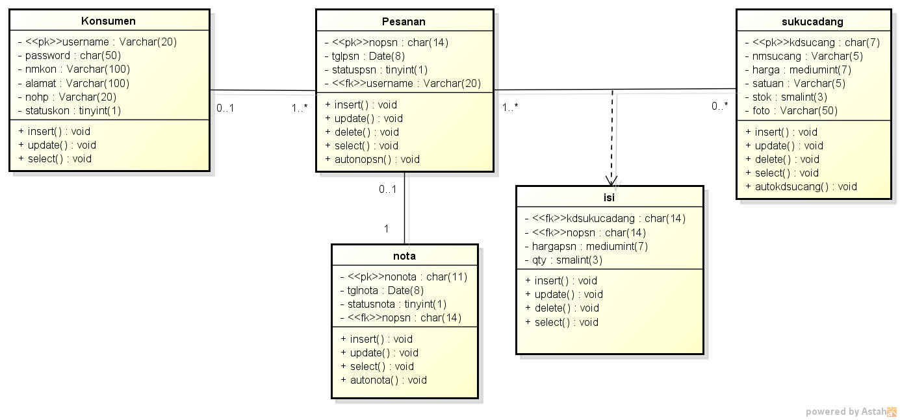

Nama : Febrian sapta Rolanda
NIM : 1811500006
Kelompok : TI6A
Hasil saya menyadur pertemuan ke-6
1. penjelasan tentang class diagram
2. perbandingan class diagram dan ERD
3. penjelasan halk-hal yang perlu di perhatikan dalam pembuatan class diagram
4. membuat Class diagram berdasarkan Studi kasus Sebelumnya

Download file latihan Astah disini